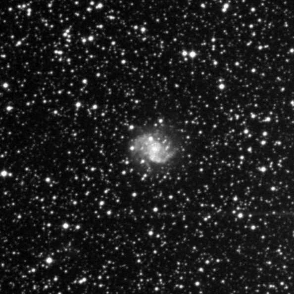
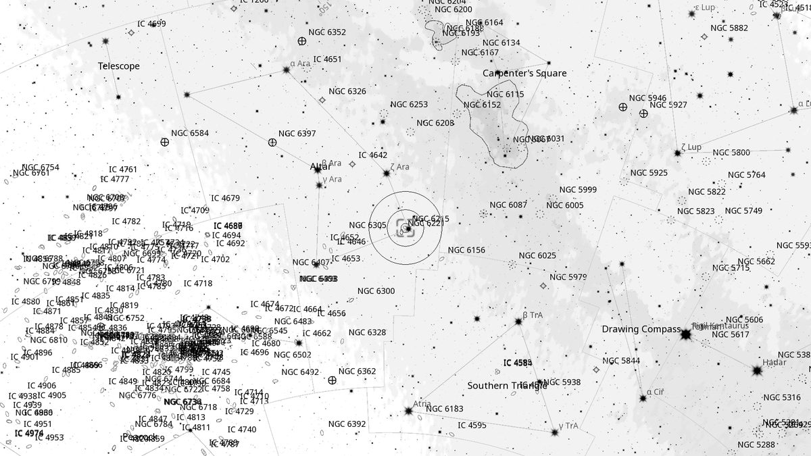
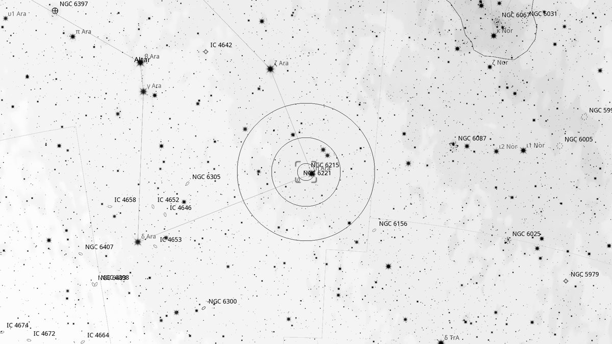
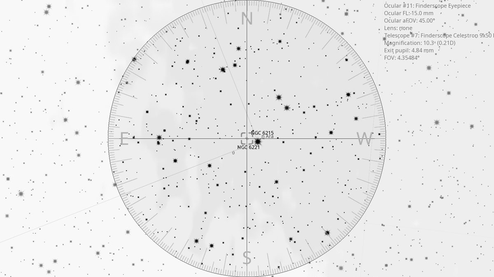
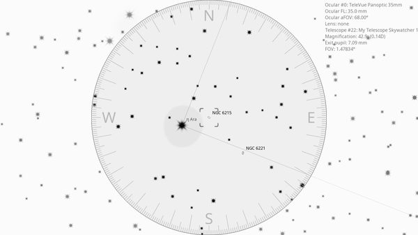

NGC 6215 (Gal)
Galaxy in Ara
| R.A. | Dec. | Size | Mag | SB | Cnt.St | Type | Distance | Chart |
|---|---|---|---|---|---|---|---|---|
| 16h 51m 08.8s | -58° 59′ 30.3″ | 2.4′ | 11.3 | 12.5 | Sc | Gal | -- | -- |

Source: POSS-2 UK Schmidt Red (STScI) | Field: 10′ × 10′
Background
NGC 6215 is a face-on spiral galaxy 70 million light-years away in Ara, classified SA(s)c. Forms an interacting pair with NGC 6221 just 25' away, the two linked by a neutral-hydrogen (HI) bridge thought to be triggering starburst activity in both galaxies.
My Observing Notes
25-cm (Meade 10-inch LX200, The Coffee Grinder): Easy to find: 25' south-east of the K-type star η Ara, which appears as a bright orange-yellow star in the same field. NGC 6215 shows as a circular patch 2'×1.6' with even brightness; no distinctive core or detail visible at this aperture. Nudge it to the top of the field and NGC 6221 squeezes in.(Friday, June 2025)
References
Charts

Ultra-wide view (~25° field)

Wide-field view with Telrad rings (4°, 2°, 0.5°)

Finderscope view (9×50 RACI, ~4.4° TFOV)

Eyepiece view — 35 mm Panoptic on 12-inch f/5 (1.6° TFOV)